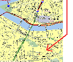

|
|
|
The Pittsburgh International Hostel on Warrington was located in the Allentown neighborhood of Pittsburgh in a former bank building. It was located on a hilltop across the Monongahela River from uptown Pittsburgh. For those of you familiar with the area, look for the hostel at the corner of Arlington and Warrington Avenues. |
Hostels are friendly, inexpensive lodgings for travelers. They provide dormitory-style accommodations with separate quarters for males and females. Many hostels have private/family rooms which can be reserved in advance. Beds come with blankets and pillow; hostel guests provide (or rent for a modest fee) their own towels and bed linens. The Pittsburgh International Hostel charged $19 for members, and $22 for non-members, including tax /night/bed.
The Pittsburgh International Hostel on Warrington had 50 beds and several family rooms. An elevator takes you to the 4th floor where the common room and hosteller's kitchen have a sweeping view of Pittsburgh. The travel center was conveniently located on the first floor. |
Click the
small image to view a larger size with a detailed description.
 |
 |
 | |||
| Kitchen | Dining Area | Dorm Room | Map from Downtown | ||
 |
 |
 |
|
||
| Family Room | Bathroom | Conference Room | Outside view |
Most basic hosteller services are within walking distance of the hostel. Laundromat, Grocery store, Delicatessen, Drug Store, Hardware Store, ATM machine
We have had many comments from hostellers who have stayed at the former Pittsburgh International Hostel on Warrington !
Want to find out about Pittsburgh and what to do in town. Here are some links to sites that show off the city.
The current weather and forecast for Pittsburgh.
Since the closing of this Pittsburgh International Hostel on Warrington there is a group trying to establish another International AYH Hostel in Pittsburgh. For more information on donating to the hostel project or volunteering your time, contact The Pittsburgh Hostel Project,.
| The Hostel address was | A Map from Downtown or Textual Directions were available |
||
| Hostelling International Pittsburgh
830 E Warrington Ave Pittsburgh PA 15210 |
We were located above the Southside at 830 East Warrington Avenue at the corner with Arlington, in Pittsburgh's Allentown neighborhood. There was map that shows the location, along with textual directions. Southside is on the south shore of the Monongahela River across from downtown Pittsburgh.
Member Greater Pittsburgh Convention and Visitors Bureau
"To provide inexpensive educational travel, intercultural understanding, and an understanding of the natural environment through hostels, hostelling, and outdoor recreation."
Pittsburgh Council | Activities Program | Comments/Questions
This page was last updated January 21, 2006